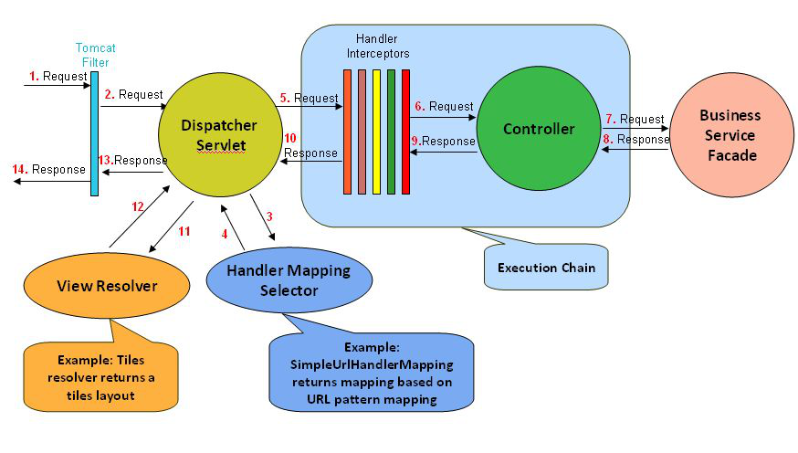
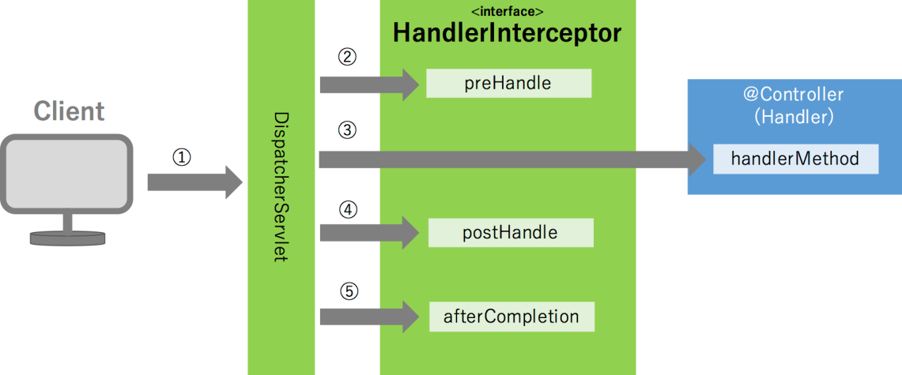

05_spring_MVC_inteceptor
Jan 21, 2018
目录
- 拦截器
- 拦截器的基本实现
- 拦截器链
拦截器
- 拦截器: Spring MVC 核心应用组件
- 拦截器作用: 用于处理多个controller的共性问题, 当请求由dispatcherServlet派发到controller时, 先经由拦截器中相关方法进行预处理.(方法决定是否放行)
- 拦截器架构图:

- 拦截器执行流程:

拦截器的基本实现
- 创建拦截器类, 实现HandlerInterceptor接口或继承HandlerInterceptorAdaptor实现类
- 配置spring配置文件
1
2
3
4
5
6
7
8
9
10
11
12
13
14
15
16
17
18
19
20
21
22
23
24
25
26
27
28
29
30
31
32
33
34
35
36
37
38public class TimeInterceptor implements HandlerInterceptor {
@Override
public boolean preHandle(
HttpServletRequest request,
HttpServletResponse response,
Object handler)
throws Exception {
System.out.println("time.preHandle");
long startTime=System.nanoTime();
request.setAttribute("startTime", startTime);
return true;//true表示放行，false表示拦截
}
@Override
public void postHandle(HttpServletRequest request, HttpServletResponse response, Object handler,
ModelAndView modelAndView) throws Exception {
System.out.println("time.postHandle");
}
@Override
public void afterCompletion(
HttpServletRequest request, HttpServletResponse response, Object handler, Exception ex)
throws Exception {
System.out.println("time.afterCompletion");
long endTime=System.nanoTime();
long startTime=(Long)request.getAttribute("startTime");
System.out.println("time:"+(endTime-startTime));
}
}
<mvc:interceptors>
<mvc:interceptor>
<!-- 黑名单 直接拦截, 进入interceptor 方法内部-->
<mvc:mapping path="/**"/>
<!-- 白名单 不拦截 直接放行, 不进入interceptor 方法内部 -->
<mvc:exclude-mapping path="/user/doLogin.do"/>
<!-- 拦截器(这个bean也可以通过ref方式引用，前提是在外面要通过xml或注解方式定义) -->
<bean class="com.spring.TimeInterceptor"/>
</mvc:interceptor>
</mvc:interceptors>
拦截器链
- 多个拦截器可以构成一个拦截器链, 原理类似过滤器中的过滤链.
- 多个拦截器中, 当所有匹配到的拦截器中preHandler()执行结束之后, 才能调用controller中处理方法, 而后所有匹配的拦截器中postHandler()执行结束之后, 再执行所有匹配到的拦截器的afterCompletion()方法.
- 多个拦截器执行顺序取决于配置文件节点先后顺序.
1
2
3
4
5
6
7
8
9
10
11
12
13
14
15
16<!-- 配置拦截器 (要注意标签的编写顺序)-->
<mvc:interceptors>
<!-- 当存在多个拦截器时，哪个拦截器的方法先执行，要看拦截器配置的顺序 -->
<mvc:interceptor>
<mvc:mapping path="/user/*"/>
<ref bean="logInterceptor"/>
</mvc:interceptor>
<mvc:interceptor>
<!-- 拦截所有请求(这些请求要交给拦截器处理) -->
<mvc:mapping path="/**"/>
<!-- 定制对哪些请求不拦截 (这些请求不需要拦截处理)-->
<mvc:exclude-mapping path="/user/doLogin.do"/>
<!-- 拦截器对象 -->
<bean class="xxx.xxx.xxx.TimeInterceptor"/>
</mvc:interceptor>
</mvc:interceptors>